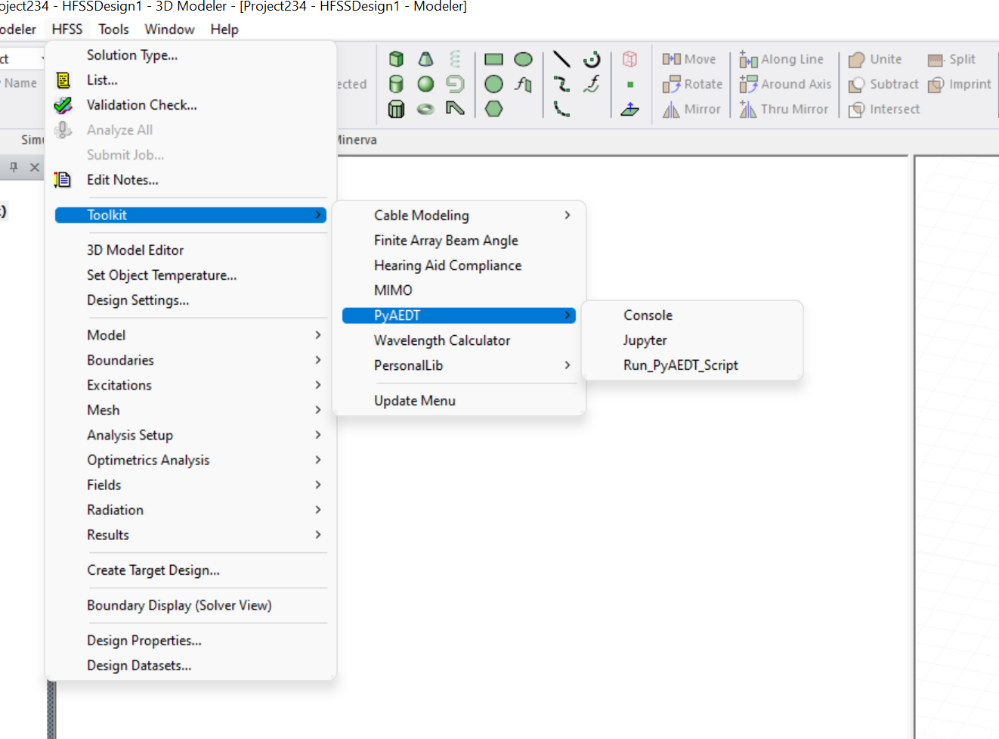
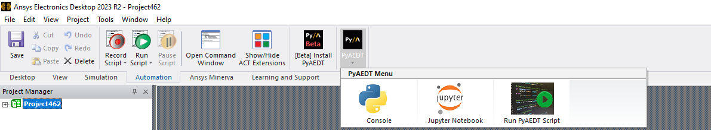

Installation#
PyAEDT consolidates and extends all existing capital around scripting for AEDT, allowing re-use of existing code, sharing of best practices, and collaboration.
This PyAnsys library has been tested on HFSS, Icepak, and Maxwell 3D. It also provides basic support for EDB and Circuit (Nexxim).
Requirements#
In addition to the runtime dependencies listed in the installation information, PyAEDT requires Ansys Electronics Desktop (AEDT) 2022 R1 or later. The AEDT Student Version is also supported.
Install from a Python file#
AEDT already includes CPython 3.7, which can be used to run PyAEDT.
It is also possible to use CPython 3.7 (3.10 from AEDT 2023R2) as a virtual environment to run PyAEDT.
In order to do that you can download the following file
PyAEDT Installer Python file
Open an Electronics Desktop Session and click on Tools->Run Script and execute the file.
Offline install is also possible using wheelhouses.
A wheelhouse is a zip containing all needed packages that can be installed offline.
PyAEDT wheelhouse can be found at Releases.
After downloading the wheelhouse zip specific for your distribution and Python release,
run the script from Electronics Desktop using the zip full path as argument.
Please note that AEDT 2023 R1 and lower requires Python 3.7 wheelhouse while AEDT 2023 R2
and higher requires the Python 3.10 wheelhouse.
After installation a new menu appears in AEDT Menu as in the image below.
{kind=link}
Starting from 2023R2, a Ribbon button is available in Automation Tab as in the example below.
{kind=link}
Install on CPython from PyPI#
You can install PyAEDT on CPython 3.7 through 3.10 from PyPI:
pip install pyaedt
You can also install PyAEDT from Conda-Forge:
conda install -c conda-forge pyaedt
Linux support#
PyAEDT works with CPython 3.7 through 3.10 on Linux in AEDT 2022 R2 and later. However, you must set up the following environment variables:
export ANSYSEM_ROOT222=/path/to/AedtRoot/AnsysEM/v222/Linux64
export LD_LIBRARY_PATH=$ANSYSEM_ROOT222/common/mono/Linux64/lib64:$ANSYSEM_ROOT222/Delcross:$LD_LIBRARY_PATH
Install offline from a wheelhouse#
Using a wheelhouse can be helpful if you work for a company that restricts access to external networks. Wheelhouses for CPython 3.7, 3.8, and 3.9 are available in the releases for PyAEDT v0.4.70 and later for both Windows and Linux. From the Releases page in the PyAEDT repository, you can find the wheelhouses for a particular release in its assets and download the wheelhouse specific to your setup.
You can then install PyAEDT and all of its dependencies from one single entry point that can be shared internally, which eases the security review of the PyAEDT package content.
For example, on Windows with Python 3.7, install PyAEDT and all its dependencies from a wheelhouse with code like this:
pip install --no-cache-dir --no-index --find-links=file:///<path_to_wheelhouse>/PyAEDT-v<release_version>-wheelhouse-Windows-3.7 pyaedt
Install from a batch file#
If you are running on Windows, you can download
PyAEDT Environment with IDE bat file
and run this batch file on your local machine. Using this approach
provides you with a complete integrated development environment (IDE)
for writing PyAEDT scripts in Windows with a simple batch file.
This batch file executes these steps:
Creates a Python virtual environment in your
%APPDATA%folder. To accomplish this, it uses CPython in the selected version of AEDT available on your machine.Installs PyAEDT.
Optionally installs Spyder with -s flag.
Installs Jupyter Lab.
Creates a symbolic link from your PyAEDT installation to AEDT
PersonalLibso that scripts can also be run within AEDT.Updates PyAEDT.
Install PyAEDT toolkit in AEDT to enable PyAEDT Console and PyAEDT Run Script.
Runs the tool that you choose (Spyder, Jupyter Lab, or a simple console).
Steps 1 through 5 are executed only the first time that you run the batch file or when -f is used:
pyaedt_with_IDE.bat --force-install
pyaedt_with_IDE.bat -f
Step 6 is executed only when running the command with the -update option:
pyaedt_with_IDE.bat --update
pyaedt_with_IDE.bat -u
Optionally, you can decide to pass a Python path. This path is then used to create a virtual environment:
pyaedt_with_IDE.bat -f -p <path-to-python-root-folder>
In addition, it is possible to install the PyAEDT package and all its dependencies provided in the wheelhouse by executing the batch file mentioned earlier. You must use the Wheelhouse 3.7 package if no Python path is provided. Otherwise, you must download and use the correct wheelhouse:
pyaedt_with_IDE.bat-w <path_to_wheelhouse>PyAEDT-v<release_version>-wheelhouse-Windows-3.7
pyaedt_with_IDE.bat -p <path-to-python3.8-root-folder> -w <path_to_wheelhouse>PyAEDT-v<release_version>-wheelhouse-Windows-3.8
pyaedt_with_IDE.bat -p <path-to-python3.7-root-folder> -w <path_to_wheelhouse>PyAEDT-v<release_version>-wheelhouse-Windows-3.7
pyaedt_with_IDE.bat -p <path-to-python3.9-root-folder> -w <path_to_wheelhouse>PyAEDT-v<release_version>-wheelhouse-Windows-3.9
Use IronPython in AEDT#
PyAEDT is designed to work in CPython 3.7+ and supports many advanced processing packages like
matplotlib, numpy, and pyvista. A user can still use PyAEDT in the IronPython
environment available in AEDT with many limitations.
To use IronPython in AEDT:
Download the PyAEDT package from
https://pypi.org/project/pyaedt/#files.Extract the files.
Install PyAEDT into AEDT, specifying the full paths to
ipy64andsetup-distutils.pyas needed:
ipy64 setup-distutils.py install --user
Install PyAEDT in Conda virtual environment#
Create virtual environment
conda create --name pyaedt_py310 python=3.10
Activate virtual environment
conda activate pyaedt_py310
Install required packages.
Download requirements.txt
pip install -r requirements.txt
Upgrade PyAEDT to the latest version#
pip install -U pyaedt